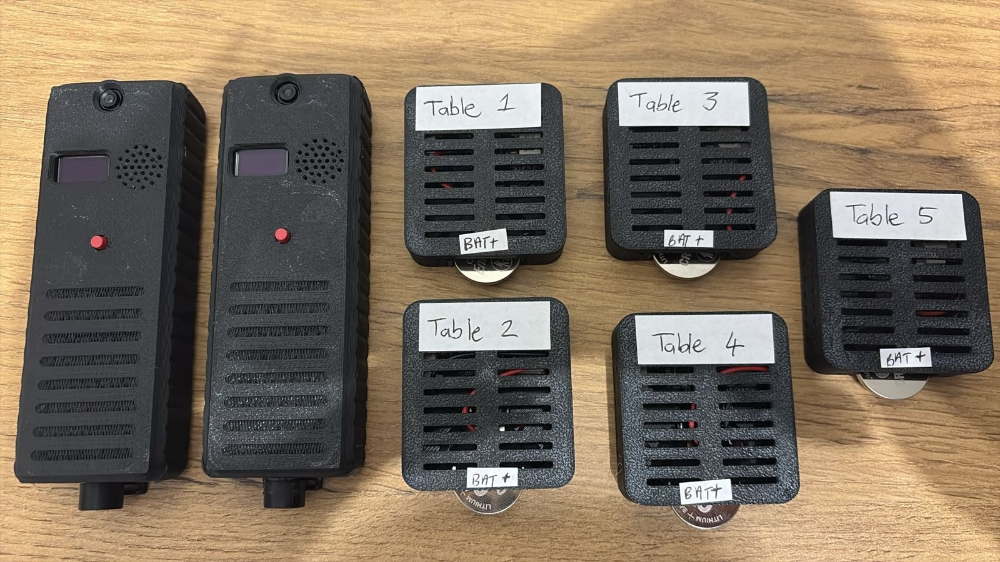

Project Michelin — Proof of Concept
Michelin Mic Device Guide
A wearable audio recorder that captures waiter–customer interactions, tags each recording with a table location via Bluetooth beacons, and automatically uploads everything over WiFi. This is a proof of concept demonstrating the complete end-to-end data collection flow.
Overview
Proof of Concept
This prototype proves the complete data collection pipeline works end-to-end. It is not a finished product — the goal is to validate the concept and surface issues for refinement.
Future versions will address: audio quality and clarity improvements · smaller and more discreet device form factor · any issues identified during field testing · support for an unlimited number of BLE beacons (this prototype has 5 hardcoded).
End-to-end flow
Waiter identity assigned
A waiter name and code (e.g. Alice | W01) are assigned to the device by scanning a QR code from the tools site. The identity is saved to flash and survives reboots — only needs to be done once when the device changes hands.
Recording starts — audio captured into memory
A 3-second button hold starts recording. Two microphones capture stereo audio simultaneously — one facing the table (customer speech and ambient), one facing the waiter. Audio is written directly into four on-chip memory buffers. Nothing touches the SD card during recording — there is no write latency and no risk of audio gaps.
BLE beacons scanned continuously — table location embedded in audio
While recording, the device scans for up to 5 iBeacon transmitters placed at each table. Every second, it records the signal strength (RSSI) and estimated distance to each beacon. This snapshot log is written directly into the WAV file as a custom data chunk — so every recording is self-contained and carries its own location history. A future version will support an unlimited number of beacons.
Segment finalised every 30 seconds — SD card as fallback
Every 30 seconds the current buffer is sealed (WAV header + BLE log written in-place) and queued for upload. Recording immediately continues in the next buffer — there is no pause. If WiFi or the server is unavailable, the segment falls back to the SD card and is uploaded automatically when connectivity returns.
Uploaded over WiFi to MinIO — ready for analysis
A background task turns WiFi on, streams the buffer directly to a local MinIO server, then turns WiFi off again. BLE scanning and audio recording continue uninterrupted on the other processor core. Each uploaded file is a standard WAV named with the mic ID, timestamp, and waiter identity — ready to open in any audio tool or process via the Process WAV tab.
Isazi data science team processes the files
Once the recordings are in MinIO, the Isazi data science team takes over — transcribing audio, analysing waiter proximity and table interaction patterns, and extracting insights from the BLE location data embedded in each file.
File Format
Filename
mic1
Device ID from mic_id= in config
20260403_120000
Segment start — YYYYMMDD_HHMMSS (NTP time)
W01
Waiter code from QR assignment
Alice
Waiter name from QR assignment
WAV Structure
Each file is a standard WAV with an additional custom ble_ RIFF chunk appended after the audio data. Standard WAV players ignore the extra chunk.
| Chunk | Size | Contents |
|---|---|---|
| RIFF/WAVE | 12 B | Standard RIFF container header |
| fmt | 24 B | PCM format — stereo, 16-bit, configurable sample rate |
| data | ~1.83 MB | Interleaved stereo PCM. Left = table mic, Right = waiter mic |
| ble_ | ~1 KB | BLE snapshot log — 34 bytes per second: uint32 offset_ms + 5 × (bool active, int8 rssi, float32 distance) |
Working with the files
Process WAV →
Split channels into table mic / waiter mic, view the BLE snapshot table, and export WAVs + CSV — all in one pass.
Open in Audacity
Standard stereo WAV — open directly. Use Tracks → Stereo to Mono to isolate channels.
MinIO Setup
The Michelin Mic uploads recordings to MinIO — a free, self-hosted S3-compatible object store. It must be running on a machine connected to the same WiFi network as the device. The Mac hosting MinIO needs to be on and reachable during recording sessions.
Option A — Homebrew (easiest)
If you have Homebrew installed, this is the fastest path.
# Install
brew install minio/stable/minio
# Start (data stored in ~/minio-data)
mkdir -p ~/minio-data
minio server ~/minio-data \
--console-address :9001MinIO starts in the foreground. Keep the terminal open while recording.
Option B — Docker
Requires Docker Desktop. Data persists in a named volume.
docker run -d \
--name minio \
-p 9000:9000 -p 9001:9001 \
-v minio_data:/data \
-e MINIO_ROOT_USER=minioadmin \
-e MINIO_ROOT_PASSWORD=minioadmin \
minio/minio server /data \
--console-address :9001Runs in the background. Restart with docker start minio.
First-time setup
- 1 Open the MinIO web console at http://localhost:9001 — log in with minioadmin / minioadmin.
- 2 Create a bucket named audio (or whatever name you put in minio_bucket= in config.txt). Leave all settings at default.
- 3 Find your Mac's local IP address — in Terminal: ipconfig getifaddr en0 (Wi-Fi) or en1. It will look like 192.168.x.x.
- 4 Put that IP in the SD card config file as minio_host=192.168.x.x with minio_port=9000.
Config File
Place config.txt in the root of the SD card before inserting it. The device reads it at boot, saves values to flash (NVS), and shows "Config updated" on the display if anything changed. On subsequent boots without the file, it falls back to the saved NVS values.
# ── WiFi ───────────────────────────────────────────────
wifi_ssid=Home DSL # your network name
wifi_pass=yourpassword # your network password
# ── MinIO Upload ───────────────────────────────────────
minio_host=192.168.1.72 # IP or hostname, no http:// or trailing slash
minio_port=9000 # MinIO default
minio_bucket=audio # bucket must already exist
minio_access=minioadmin
minio_secret=minioadmin
# ── Device Identity ────────────────────────────────────
mic_id=mic1 # prepended to every filename. Use mic2, mic3 etc.
# max 15 chars, no spaces
# ── Audio ──────────────────────────────────────────────
sample_rate=16000 # Hz. Min: 8000. Max: 16000 (PSRAM limit)
mic_gain_table=4.0 # table-facing mic gain. Range: 1.0–8.0
mic_gain_waiter=4.0 # waiter-facing mic gain. Range: 1.0–8.0
hp_cutoff_hz=80 # high-pass cutoff. Recommended: 80. Range: 40–200
segment_duration=30 # seconds per file. Max: ~30s at 16kHzSetting Reference
| Key | Default | Range | When to change |
|---|---|---|---|
| mic_gain_table | 4.0 | 1.0–8.0 | Increase if the table channel is too quiet. Decrease if you hear distortion or clipping on loud sounds. |
| mic_gain_waiter | 4.0 | 1.0–8.0 | Increase if the waiter's voice sounds weak relative to the table channel. Can be set higher than table gain if the waiter mic is further from the mouth. |
| hp_cutoff_hz | 80 | 40–200 | Increase (e.g. 120–150) if you get heavy thumps from handling or table vibration. Decrease to 60 if male voices sound thin. Male speech starts at ~85 Hz — avoid going above 150. |
| sample_rate | 16000 | 8000–16000 | 16 kHz is standard for speech and the recommended setting. Lower rates produce smaller files but reduce quality. 16 kHz is the maximum — PSRAM limits each buffer to ~30s at this rate. |
| segment_duration | 30 | 10–30 | How often a new file is created and uploaded. Shorter = more frequent uploads, smaller files, less data at risk if the device crashes. Longer = fewer uploads, more overhead per file. |
| mic_id | mic1 | — | Change to mic2, mic3 etc. when deploying multiple devices at the same venue. Appears as the first part of every WAV filename. |
Boot Sequence
Always · 1.5s
If config changed
While connecting
Connected
Main screen
After connecting, the device syncs time via NTP, turns WiFi off, and starts BLE scanning. It's ready to record. If no waiter has been assigned yet, it will prompt you to scan a QR code first.
Waiter Assignment
Each recording is tagged with a waiter identity — a name and a code. This appears in every WAV filename and in the BLE data table. The identity is stored in flash and survives reboots, so you only need to re-assign when the device changes hands.
- 1 Open the Generate QR Code tab in the tools site. Enter the waiter's name and code, then download the PNG.
- 2 Navigate the device to Screen 1 (waiter screen) using single click.
- 3 Hold the button for 3 seconds. The camera activates. Hold the printed QR code in front of the camera.
- 4 Two ascending vibration pulses confirm success. The display updates with the new waiter name and code immediately.
Display sequence during QR scan
Screen 1 · idle
Hold progress
Camera active
Success · 2 pulses
Timeout · 2 equal pulses
Recording cannot start until a waiter has been assigned at least once. If no waiter is set, the device shows an error and redirects to screen 1.
Recording & Upload
Buffer Strategy
Audio is written directly into PSRAM — four 1.95 MB buffers totalling 7.8 MB. At 16 kHz stereo 16-bit, each buffer holds ~30 seconds. This means up to 3 completed segments can be queued for upload while a 4th is still recording.
Buffer 0
REC
Recording now
Buffer 1
UPL
Uploading
Buffer 2
rdy
Queued
Buffer 3
fre
Empty
Upload Flow
- 1.Segment fills → WAV header + BLE log written in-buffer → queued via FreeRTOS queue
- 2.Upload task wakes → turns WiFi on → connects → streams buffer directly to MinIO (AWS Sig V4)
- 3.Scans SD card for any leftover files from previous sessions → uploads those too
- 4.Turns WiFi off → BLE resumes uninterrupted
SD Card Fallback
If WiFi fails to connect or MinIO is unreachable, segments are written to the SD card. They are automatically uploaded during the next successful connection. The retry backoff is 5 seconds on the first attempt, then 30 seconds for each subsequent attempt.
OLED Screens
9 screens total. Single-click cycles forward, double-click goes back.
Screen 0
Main Screen
- Line 1: Recording state (OFF / REC) + blinking dot when active
- Line 2: Assigned waiter name
- Line 3: Upload speed (UL:45KB/s) or UL: idle
- Line 4: Files pending upload from SD card
- Hold 3s: Start or stop recording
Screen 1
Waiter Screen
- Lines 1–2: Currently assigned waiter code and name
- Hold 3s: Activate camera and scan a QR code to assign a new waiter
- Hold 6s: Load placeholder waiter (John · d03) for testing — no QR needed
- A tick mark appears on the progress bar at 3s to help time the QR threshold
- QR scan is blocked while recording is active
Screen 2
PSRAM Buffers
- Shows all 4 PSRAM recording buffers and their state
- REC — actively recording into this buffer
- UPL — currently uploading to MinIO
- rdy — full, queued for upload
- fre — empty and available
- idl — not recording, not yet used
- Hold 3s: Start or stop recording
Screen 3
Screen 4
BLE Beacons (Screens 3 & 4)
- Screen 3 shows beacons 1–3, Screen 4 shows beacons 4–5
- Format: N RSSI dist — e.g. 1-70 3.2m = beacon 1, −70 dBm, ~3.2 m
- stale — beacon was seen recently but not in the last scan window
- -- — beacon has never been seen or is out of range
Screen 5
System Status
- R Recording · B BLE active · U Uploading · W WiFi on
- P:2 PSRAM segments pending · SD:1 files on SD pending
- Lines 3–4: assigned waiter name and code
Screen 6
CPU & Temperature
- C0 — Core 0 load (WiFi, BLE, upload). Will show ~99% during upload — this is normal.
- C1 — Core 1 load (recording, display)
- Die temperature — typically runs 5–15°C above ambient
- Upload speed in KB/s when active
Screen 7
Speedtest
- Hold 3s: Connects to WiFi and runs an upload speed test to MinIO
- Live progress shows Mbps and KB/total bytes sent
- Press: Cancel the test immediately
- Results persist on the screen until the next test
Screen 8
Activity Log
- Shows the 4 most recent activity events
- Oldest at the top, newest at the bottom
- Useful for confirming that uploads are succeeding
Hardware & Controls
One physical button on the front of the device. The device distinguishes single clicks, double-clicks, rapid multi-clicks, and holds.
Power Switch
A small slide switch on the bottom-left of the device controls power. Up is on, down is off. Wait for the boot sequence to complete before starting recording.
Battery
The device has an 800 mAh lithium battery. Battery life has not yet been formally tested and will vary depending on WiFi upload frequency and recording duration.
Charging
Charge via the USB-C port on the device. The device can be left on or turned off while charging.
Display Timeout
The OLED display turns off automatically after 60 seconds of inactivity to conserve power. Any button press wakes the display immediately without triggering the press action — the first press after timeout only wakes the screen.
Lanyard Hook
A lanyard hook is located on the side of the device opposite the camera — the same side as the waiter-facing microphone. The waiter can thread a lanyard through the hook and hang the device around their neck, keeping the waiter mic close to their mouth during service.
Button Actions
| Action | Result |
|---|---|
| Single click | Next screen (0→1→2→…→8→0). Fires 500ms after release to allow detection of double-click. |
| Double click | Previous screen (0→8→7→…→1→0). |
| 4 rapid clicks | Toggle uploads on/off. Shows UL enabled or UL off for 1s. When disabled, segments fall back to SD and are uploaded when re-enabled. |
| Hold 3s — Screen 0 | Start or stop recording. Vibration feedback confirms the action (two short pulses to start, one long pulse to stop). |
| Hold 3s — Screen 1 | Activate camera and scan a QR code to assign a new waiter identity. Blocked if currently recording. |
| Hold 3s — Screen 2 | Start or stop recording (same as screen 0). |
| Hold 3s — Screen 7 | Run a WiFi upload speed test to MinIO. |
| Hold 6s — Screen 1 | Load placeholder waiter identity (John · d03) for testing. Auto-fires at 6s — no release needed. |
| Press during speedtest | Cancel the speedtest immediately. |
Vibration Feedback
| Event | Pattern |
|---|---|
| Recording started | 80ms · pause · 80ms |
| Recording stopped | 200ms |
| QR scan success | 120ms · pause · 80ms (ascending) |
| QR scan timeout | 100ms · pause · 100ms (equal) |
Test Kit
To run a complete end-to-end test of the system, the Michelin Mic devices should be used together with the BLE iBeacon transmitters. Place one beacon at each table position before starting recording — the devices will detect and log proximity to each beacon throughout the session.

BLE Beacons
The kit includes iBeacon BLE transmitters — one per table. Each beacon broadcasts a unique identifier (major number 1–5) that the Michelin Mic device picks up during recording. This creates a timestamped proximity log of which tables the waiter visited and for how long.
Power
Beacons are powered automatically when the battery is installed — there is no on/off switch. Simply insert the battery before placing the beacon at the table. Battery life is approximately one year under normal use; replace the coin cell if the beacon stops appearing in the proximity logs.
Table Mapping
| Major number | Table |
|---|---|
| 1 | Table 1 |
| 2 | Table 2 |
| 3 | Table 3 |
| 4 | Table 4 |
| 5 | Table 5 |
This prototype supports 5 beacons. Future versions will support an unlimited number.
Placement & Future Use
For testing, beacons can simply be placed on top of the table. In a production deployment, beacons will be smaller and designed to be mounted discreetly under the table, out of sight.
For larger tables where a single beacon may not provide sufficient proximity accuracy, multiple beacons can be assigned to the same table. The system can use the signal from the closest beacon to improve position resolution — particularly useful for long banquet-style tables or irregularly shaped rooms.
Microphones
Two Adafruit ICS-43434 I²S MEMS microphones share a single data line and record as a stereo pair. The SEL pin on each mic determines which I²S time slot it drives — one mic tri-states while the other transmits.
Left Channel — Table Mic
- SEL = GND — drives the left (L) I²S slot
- Faces the table / customer
- Captures ambient conversation and customer speech
- Split to _table_mic.wav via the Split WAV tool
Right Channel — Waiter Mic
- SEL = 3V3 — drives the right (R) I²S slot
- Faces the waiter's mouth
- Captures waiter speech directly and clearly
- Split to _waiter_mic.wav via the Split WAV tool
Audio Processing Pipeline
Gain and filter cutoff are configurable via config.txt. See the Config File section below.